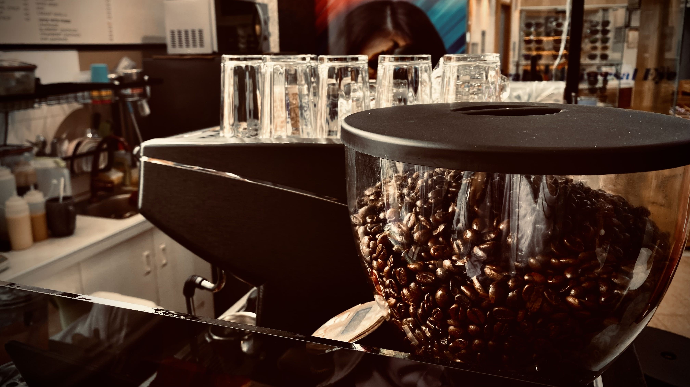

About Perk Up Cafe

Our Story

Nestled in the heart of Jaro, Iloilo City, Perk Up Cafe was established with a simple yet passionate mission: to craft a cozy, welcoming retreat where friends, students, and coffee lovers could pause and recharge. What started as an ambitious vision quickly blossomed into a beloved neighborhood gathering spot known for its warm hospitality and freshly brewed beverages.
From day one, our goal has been to offer high-quality, handcrafted coffees, rich espresso blends, and delightful treats at accessible prices. We take pride in sourcing exceptional beans and ingredients, ensuring that every cup served delivers a memorable flavor experience—whether you need an early morning pick-me-up or an afternoon study session companion.
Beyond serving coffee, Perk Up Cafe is deeply rooted in the vibrant Iloilo community. We designed our space to foster meaningful connections, quiet moments of productivity, and joyful conversations. As we continue to grow, our commitment remains unchanged: to perk up your day, one cup at a time.
OUR MISSION
To serve freshly crafted, affordable coffee and treats in a welcoming space where the Iloilo community can connect, study, and recharge.
OUR VISION
To be Jaro's favorite neighborhood coffee destination, celebrated for warm hospitality, consistent quality, and memorable everyday moments.
OUR VALUES
Quality in every cup, genuine warmth for every guest, student-friendly accessibility, and pride in our local community.